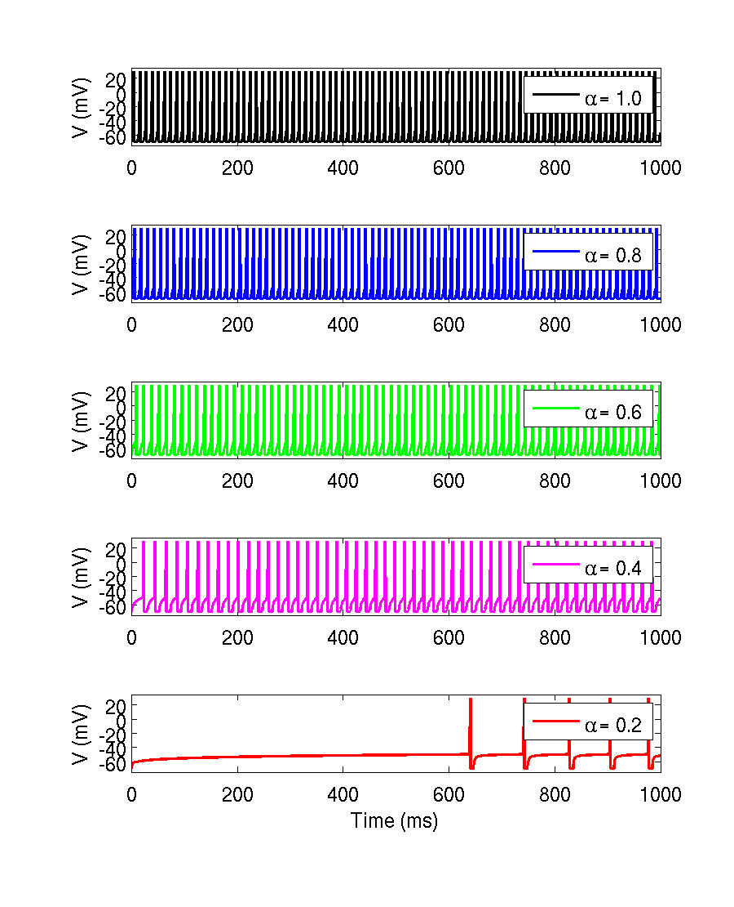

This folder contains Matlab scripts used to produce the figures in Teka W, Marinov M T, and Santamaria F. Neuronal spike timing adaptation described with a fractional leaky integrate-and-fire mode. PLos Computational Biology 2014. The main function is runNetworkderivative.m This function is used in FractionalLeakyIntegrate_and_Fire.m which is self explanatory. When FractionLeakyIntegrate_and_Fire is typed into the matlab command line the following figure results: 